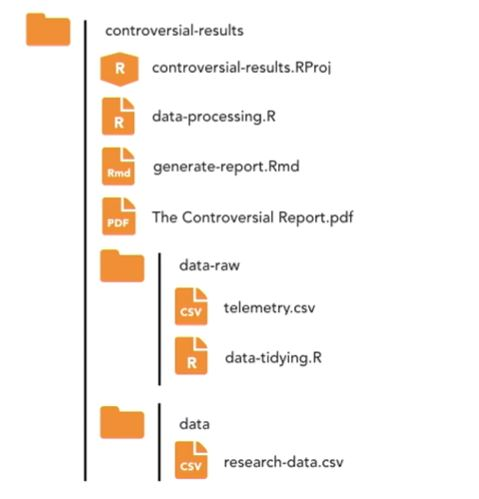

Chapter 4 Being Tidy with RStudio Projects
4.1 Why should we use projects in RStudio?
4.1.1 Easier import
Projects are a powerful tool in RStudio for developing reproducible code, whether for individual data analyses, data-driven reports, or even developing your own packages. Projects also get you ready from the beginning of a collaborate with you, for instance, on GitHub. But the main advantage of projects is that they make your life easier when importing data. If you’ve used R before, you’ll be familiar with the concept of a working directory. If not, then a working directory is simply the place where R is currently looking for files. If you’re not using projects, then you’ll likely have seen this at the top of your script files.
setwd("computer_name/.../data_folder") # Path to data folderYour data files live in that folder. But then if you send your code to others, they’ll need to change their path to include their own computer’s name and whatever long path they have, as well. Also, you’ll probably actually forget to send them the data file in the first place with a script file. Projects completely negate the need to do this, because projects make the whole concept of working with files and their paths easier. You’ll be actively discouraged from the terrible practice of using absolute file paths.
4.1.2 Improved Reproducibility
Reproducibility is a hot topic in research. How can we reassure others that results of our analyses or conclusions about research data are accurate, without providing the necessary code and explanations of our methodologies? R is an excellent toolkit for ensuring reproducible research, thanks to its open source underbelly. Anybody can go and look at the source code for base R, as well as the packages that you rely on. Organizing your own research into projects minimizes the work others need to do to reproduce your results.

Above, we see an exceedingly clean R project. The folder is called ‘controversial-results’, and we can see it contains both the raw telemetry behind our research in a folder called ‘data-raw’, and a tidied form of the data in a folder called ‘data’. Then the process for data wrangling is kept within the ‘data-processing.R’ file, and finally, there’s an R markdown file ‘(.Rmd)’ which is used to generate ‘The Controversial Report.pdf’ which we communicate to others. Anyone can reproduce this analysis by simply obtaining the ‘controversial-results’ folder, opening up ‘controversial-results.RProj’ file in RStudio, and then running the ‘data-processing.R’ file. Finally, projects make collaboration much easier, because projects keep all your files together.
4.1.3 Improved Collaboration
They’re perfectly designed for version control systems, like Git. All of the tidyverse R libraries are developed in GitHub and available as projects. So here’s a repository for haven with a great README telling me how the package should be used and what it’s for, but if I want to grab the whole package, all I need to do is go to the green button and select ‘Download ZIP’, navigate to my downloads folder, and then inside of the haven-master folder, you’ll find a .Rproj file. And if I open that up, it opens up Rstudio, and I’m ready to begin my own modifications of the haven package, if I wanted to.
Projects negate the need for setting working directories, as everything becomes a relative file path to the .Rproj-containing folder. Projects improve both reproducibility and collaboration. If you want others to work with you, the best thing you can do is set up an RStudio project and host it on a version control system like GitHub.
4.2 Create a new Project
tbu..